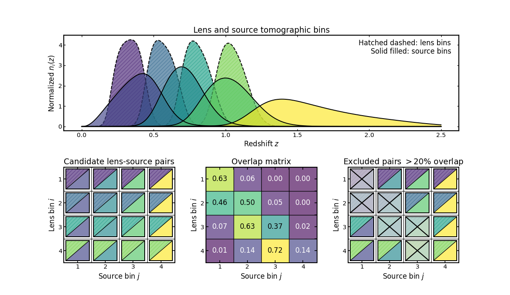
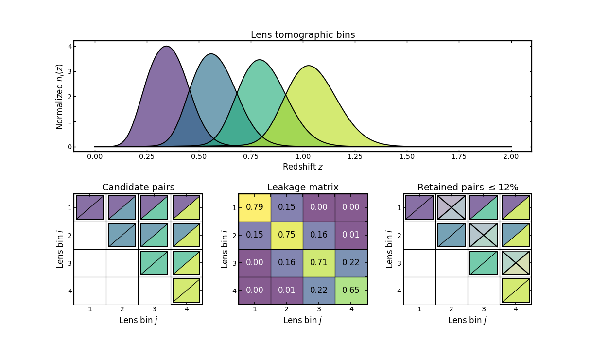
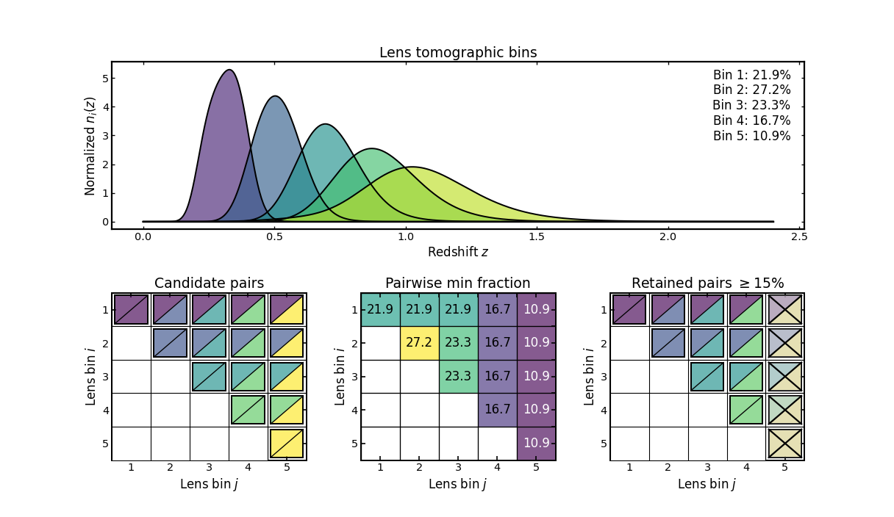

Bin-pair selections#
Bin-pair selections#
Tomographic analyses often construct many possible combinations of bins, but only a subset of those combinations are typically used in a downstream analysis.
For example, one may
exclude auto-correlations,
require bins to appear in a consistent redshift order,
remove pairs whose redshift support overlaps too strongly,
select only well-separated lens–source combinations.
In Binny, such rules are expressed through a selection specification applied to tomographic bins using
binny.NZTomography.bin_combo_filter().
Selections combine two ideas:
a topology, which defines the initial set of candidate tuples,
one or more filters, which remove tuples that do not satisfy a chosen criterion.
By convention, Binny assumes an upper-triangular ordering \(i \le j\) when constructing pairs within a single sample. This avoids symmetric duplicates such as \((i,j)\) and \((j,i)\). The reasoning behind this convention is discussed in Conventions.
The examples below illustrate the most common patterns.
Basic workflow#
Selections are written as a dictionary describing the topology and any filters to apply.
spec = {
"topology": {"name": "pairs_upper_triangle"},
"filters": [
{"name": "score_relation", "score": "peak", "relation": "lt"},
],
}
selected_pairs = tomo.bin_combo_filter(spec)
This returns a list of tuples such as
[(0, 1), (0, 2), (1, 2)]
which can then be used in a downstream analysis.
Example setup#
The examples below assume that a tomography object has already been built.
import numpy as np
from binny import NZTomography
z = np.linspace(0.0, 3.0, 500)
nz = NZTomography.nz_model("smail", z, alpha=2.0, beta=1.5, z0=0.5)
tomo = NZTomography()
tomo.build_bins(
z=z,
nz=nz,
tomo_spec={
"kind": "photoz",
"bins": {
"scheme": "equipopulated",
"n_bins": 4,
},
},
)
The selections below operate on the cached bin curves stored in
tomo.
Selections based on bin statistics#
Some selection rules rely only on summary statistics of individual bin curves, such as their peak location, mean redshift, or credible width.
These statistics describe properties of each bin independently and are often used to enforce ordering or separation conditions between bins.
Generating candidate bin pairs#
Before applying filters, a topology defines which tuples are considered.
For example, to construct all ordered bin pairs:
spec = {
"topology": {"name": "pairs_all"},
}
pairs = tomo.bin_combo_filter(spec)
For four bins this would produce
[
(0,0), (0,1), (0,2), (0,3),
(1,0), (1,1), (1,2), (1,3),
(2,0), (2,1), (2,2), (2,3),
(3,0), (3,1), (3,2), (3,3),
]
A common alternative is to keep only the upper triangle \(i \le j\) to avoid symmetric duplicates.
spec = {
"topology": {"name": "pairs_upper_triangle"},
}
pairs = tomo.bin_combo_filter(spec)
For four bins this would produce
[
(0,0), (0,1), (0,2), (0,3),
(1,1), (1,2), (1,3),
(2,2), (2,3),
(3,3),
]
Requiring redshift ordering#
A simple selection rule is to require that the second bin peaks at a higher redshift than the first.
spec = {
"topology": {"name": "pairs_all"},
"filters": [
{
"name": "score_relation",
"score": "peak",
"pos_a": 0,
"pos_b": 1,
"relation": "gt",
}
],
}
ordered_pairs = tomo.bin_combo_filter(spec)
This keeps only pairs satisfying
Such ordering rules are often useful when enforcing a physically meaningful redshift hierarchy.
Requiring minimum separation#
Two bins may be too similar if their effective redshift locations are very close.
A minimum separation can be imposed using a score summary such as the peak or mean redshift.
spec = {
"topology": {"name": "pairs_upper_triangle"},
"filters": [
{
"name": "score_separation",
"score": "peak",
"min_sep": 0.2,
"absolute": True,
}
],
}
separated_pairs = tomo.bin_combo_filter(spec)
This keeps only pairs whose peak locations differ by at least 0.2.
Comparing bin widths#
Bin widths describe how broad each bin is in redshift. Some analyses prefer to compare bins of similar width.
spec = {
"topology": {"name": "pairs_off_diagonal"},
"filters": [
{
"name": "width_ratio",
"max_ratio": 1.5,
"symmetric": True,
"mass": 0.68,
}
],
}
compatible_pairs = tomo.bin_combo_filter(spec)
This keeps only pairs whose credible-width ratio does not exceed 1.5.
Available statistic-based filters#
The following filters operate on summary statistics computed for each individual bin curve. These statistics summarize properties such as the location or width of a bin in redshift space.
Filter name |
Description |
Typical use |
|---|---|---|
|
Compares a chosen summary statistic between two bins using a relation such as greater-than or less-than. |
Enforcing redshift ordering between bins. |
|
Requires the difference between two bin statistics to exceed a specified minimum separation. |
Avoiding pairs of bins that are too close in redshift. |
|
Filters pairs based on the signed or absolute difference between two summary statistics. |
Selecting pairs with a specific spacing pattern. |
|
Requires two summary statistics to satisfy a consistency relation across bins. |
Enforcing monotonic ordering or alignment of statistics. |
|
Compares the credible widths of two bins and requires their ratio to remain below a specified threshold. |
Selecting bins with similar redshift widths. |
The statistics used by these filters include quantities such as
peak location,
mean redshift,
median redshift,
credible width.
Because these filters operate on per-bin statistics, they depend only on properties of individual bins rather than the detailed overlap between curves.
Selections driven by diagnostics#
Selections can also be motivated by diagnostic quantities that compare two bin curves directly.
Examples include overlap fractions, similarity metrics, or integrated curve norms.
Such diagnostics help reveal whether bins are strongly coupled or effectively redundant.
Removing strongly overlapping pairs#
A common diagnostic is the overlap fraction between two bin curves.
Pairs with large overlap may contain highly redundant information and can therefore be excluded.
spec = {
"topology": {"name": "pairs_off_diagonal"},
"filters": [
{
"name": "overlap_fraction",
"threshold": 0.25,
"compare": "le",
}
],
}
pairs = tomo.bin_combo_filter(spec)
This keeps only pairs whose overlap fraction does not exceed 0.25.
Using normalized overlap measures#
Another common diagnostic is the overlap coefficient, which measures how strongly one curve is contained within another.
spec = {
"topology": {"name": "pairs_all"},
"filters": [
{
"name": "overlap_coefficient",
"threshold": 0.4,
"compare": "le",
}
],
}
pairs = tomo.bin_combo_filter(spec)
Filtering using custom metrics#
Users may define their own diagnostic metric.
import numpy as np
import binny
def l1_distance(c1, c2):
return float(np.trapezoid(np.abs(c1 - c2)))
binny.register_metric_kernel("l1_distance", l1_distance)
spec = {
"topology": {"name": "pairs_all"},
"filters": [
{
"name": "metric",
"metric": "l1_distance",
"threshold": 0.2,
"compare": "ge",
}
],
}
pairs = tomo.bin_combo_filter(spec)
This allows arbitrary similarity or distance measures to be used when selecting bin combinations.
Available diagnostic-based filters#
Diagnostic-based filters operate directly on pairs of bin curves. Instead of using summary statistics, these filters evaluate quantities that measure how similar or strongly coupled two curves are.
Filter name |
Description |
Typical use |
|---|---|---|
|
Measures the fractional overlap between two bin curves based on their integrated support. |
Removing bins that share too much redshift support. |
|
Computes the normalized overlap coefficient, which measures how strongly one curve is contained within another. |
Identifying redundant bins or nested redshift distributions. |
|
Applies a user-defined metric to the pair of curves and filters pairs according to a threshold. |
Using custom similarity or distance measures. |
|
Filters pairs based on the magnitude of a curve-based norm computed from the two curves. |
Removing pairs with insufficient signal or excessively large combined amplitude. |
These diagnostics are useful when selection criteria depend on the detailed shapes of bin curves, rather than on simple summary statistics.
Visual examples#
The sections above illustrate how selections are defined and applied in code.
The next section presents visual examples showing how diagnostic matrices and candidate pair grids can be used to understand and illustrate bin-combination selections.
Lens–source overlap filtering#
This example illustrates a diagnostic-driven workflow for between-sample pair selection, which commonly appears in analyses such as galaxy-galaxy lensing.
The top panel shows the lens and source tomographic bins in redshift space. Lens bins are displayed with dashed hatched curves, while source bins are shown as solid filled curves.
The first matrix shows the candidate lens-source topology, constructed as the full Cartesian product of lens and source bins. Each cell represents a possible pair of lens bin \(i\) and source bin \(j\).
The middle matrix shows the normalized min-overlap diagnostic between the two samples. Each entry measures the fraction of overlap between the corresponding lens and source bin curves. Larger values indicate stronger coupling between the two bins.
The final matrix shows the result of applying an overlap threshold. Pairs whose overlap exceeds the chosen limit are marked as excluded, leaving only the combinations that satisfy the diagnostic criterion.
(Source code, png, hires.png, pdf)
{kind=link}
{kind=link}
{kind=link}

Leakage-based filtering#
This example demonstrates diagnostic-driven filtering for within-sample bin pairs, which arises in analyses such as galaxy clustering.
The top panel shows the tomographic lens-bin redshift distributions.
The first matrix shows the candidate pair topology, constructed from the upper-triangular set of unique bin pairs, including auto-correlations. The lower triangle is masked to emphasize that only unique pairs are considered.
The middle matrix shows the symmetrized leakage diagnostic. For each pair of bins, the diagnostic takes the larger of the two directional leakage values. This measures the degree to which galaxies from one bin contaminate another.
The final matrix shows the pairs retained after applying a leakage threshold. Off-diagonal pairs with leakage above the chosen limit are excluded, while auto-correlations are always kept.
(Source code, png, hires.png, pdf)
{kind=link}
{kind=link}
{kind=link}

Population-fraction filtering#
This example illustrates filtering based on population statistics rather than the shapes of the bin curves.
The top panel shows the tomographic lens-bin redshift distributions, along with the fraction of galaxies contained in each bin.
The first matrix again shows the candidate set of unique bin pairs, including auto-correlations.
The middle matrix shows the pairwise minimum bin-fraction diagnostic. For each pair of bins, the value corresponds to the smaller of the two galaxy fractions. This highlights pairs that involve poorly populated bins.
The final matrix shows the result of applying a minimum population threshold. Pairs whose minimum bin fraction falls below the chosen limit are excluded, leaving only pairs built from sufficiently populated bins.
(Source code, png, hires.png, pdf)
{kind=link}
{kind=link}
{kind=link}
